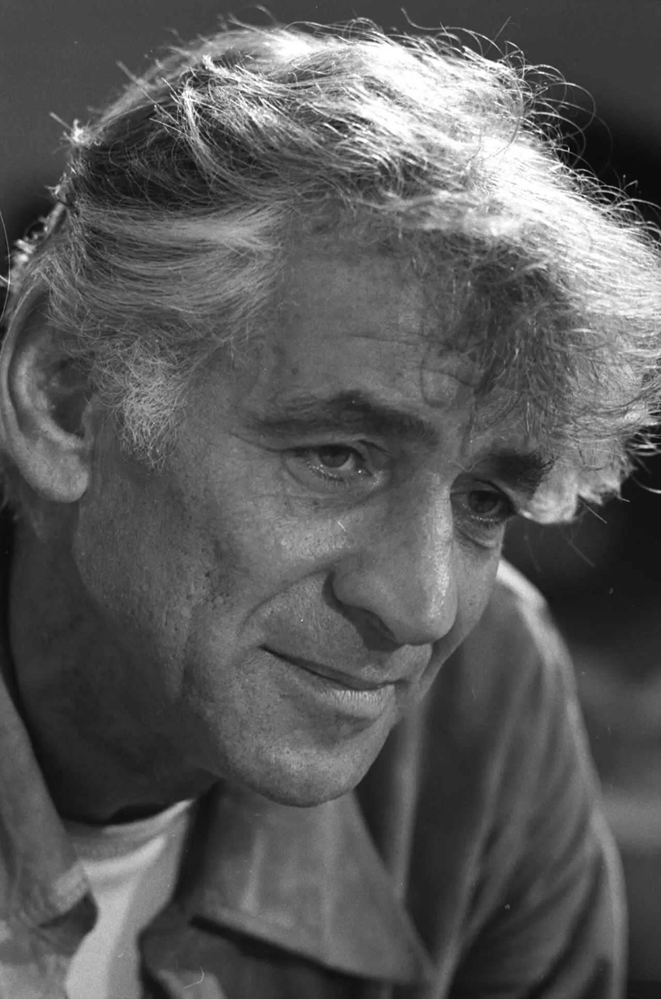
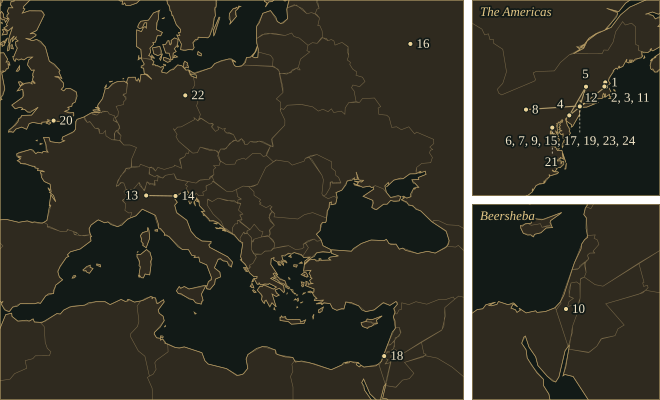
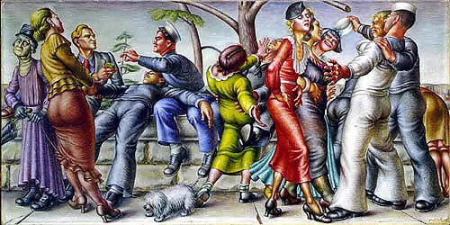

LeonardBernstein
American conductor, pianist and composer, music director of the New York Philharmonic from 1958 to 1969 and composer of West Side Story and the Chichester Psalms.
- Trained
- Harvard, 1935–39 (Walter Piston, Edward Burlingame Hill); Curtis Institute, 1939–41 (Fritz Reiner); Tanglewood from 1940 (Serge Koussevitzky)
- Posts
- Assistant conductor, New York Philharmonic, 1943 · New York City Symphony from 1945 · Music director, New York Philharmonic, 1958–69
- Collaborators
- Jerome Robbins · Betty Comden and Adolph Green · Stephen Sondheim · Lillian Hellman
- Output
- Three symphonies, ballets, five Broadway shows, two operas, choral works and one film score; fifty-three Young People’s Concerts, 1958–72
“This will be our reply to violence: to make music more intensely, more beautifully, more devotedly than ever before.”
Life
Leonard Bernstein was born on 25 August 1918 in Lawrence, Massachusetts, the eldest of three children of Samuel and Jennie Bernstein, Jewish immigrants from Ukraine. The family moved to Boston when he was a few months old, and his father sold hairdressing and beauty supplies. In the autumn of 1928 an aunt gave the family an upright piano, and the ten-year-old Leonard began to pick out songs on it. Samuel Bernstein, who wanted his son to join the business, agreed to lessons. The New Yorker reported in 1958 that he had said backstage at Tanglewood: “someday I suppose the books will say, ‘Lenny Bernstein had a father.’” In October 1932 Bernstein began lessons with Helen Coates, an assistant to the Boston pianist Heinrich Gebhard.
1935–39Harvard
He attended Boston Latin School and entered Harvard in 1935, where his teachers included Walter Piston and Edward Burlingame Hill. In January 1937 he met the conductor Dimitri Mitropoulos at a reception and spent the following week at Mitropoulos’s Boston Symphony rehearsals. On 14 November of that year he met Aaron Copland at a dance recital in New York. He graduated in June 1939.
1940–49Tanglewood and the Philharmonic
At the Curtis Institute in Philadelphia, Bernstein studied conducting with Fritz Reiner and took his diploma in May 1941. He had joined Serge Koussevitzky’s class at the new Berkshire Music Center at Tanglewood in the summer of 1940, and in 1942 he was Koussevitzky’s assistant there. In the summer of 1943 Artur Rodziński, the Philharmonic’s new music director, offered him the post of assistant conductor.
On Sunday 14 November 1943 Bruno Walter fell ill, and Bernstein conducted the orchestra’s broadcast concert at Carnegie Hall at a few hours’ notice and without a rehearsal. He told his brother Burton in 1989 that he threw away two pills a druggist had given him and said, “I’m going to do this on my own.” The programme included Strauss’s Don Quixote, and the New York Times reported the concert on its front page the next day.
His own works followed within months. Jeremiah, his first symphony, was first played at Pittsburgh on 28 January 1944, with Jennie Tourel as soloist and the composer conducting. On 18 April Fancy Free, a ballet by Bernstein and the choreographer Jerome Robbins for American Ballet Theatre, opened at the Metropolitan Opera House; the Bernstein Office states that Robbins took the idea of sailors on shore leave from Paul Cadmus’s painting The Fleet’s In!. The musical On the Town, with Betty Comden and Adolph Green, opened at the Adelphi Theatre on 28 December.
Bernstein directed the New York City Symphony from 1945 and conducted the newly renamed Israel Philharmonic for troops at Beersheba in November 1948. Koussevitzky conducted the first performance of the Second Symphony, The Age of Anxiety, after W. H. Auden’s poem, in Boston on 8 April 1949, with Bernstein as piano soloist.
1950–57Opera, Candide and West Side Story
Bernstein conducted the first performance of Ives’s Second Symphony with the Philharmonic in February 1951 and married the actress Felicia Montealegre in Boston on 9 September; they had three children. In December 1953 he became the first American to conduct an opera at La Scala, Cherubini’s Medea with Maria Callas. His score for the film On the Waterfront followed in 1954, and the Serenade after Plato’s Symposium, written for Isaac Stern, was first played at Venice that September.
Lillian Hellman proposed an adaptation of Voltaire’s Candide in 1953, and Bernstein worked on it through 1956, the year he was also writing West Side Story. Robbins had first imagined West Side Story in 1949 as East Side Story, with a Jewish girl and an Italian Catholic boy. In 1955 newspaper reports of street riots by Chicano Americans in Los Angeles led Arthur Laurents and Bernstein, who were in Hollywood, to move the setting to New York’s West Side. With lyrics by Stephen Sondheim, the musical opened at the Winter Garden Theatre on 26 September 1957.
1958–69The Philharmonic
Bernstein became music director of the New York Philharmonic in 1958 and held the post until 1969; the Bernstein Office calls him the first American-born and American-trained music director of a major orchestra. He gave fifty-three Young People’s Concerts, from 18 January 1958 to 1972, and later called them “among my favorite, most highly prized activities of my life.” For the centenary of Mahler’s birth he led a Mahler festival in the 1959–60 season. His recordings of the nine symphonies, made between 1960 and 1967, formed the first complete cycle on disc.
After President Kennedy’s assassination on 22 November 1963, Bernstein conducted Mahler’s Second Symphony in a televised memorial on 24 November. At Madison Square Garden the next evening he gave his reason as “the resurrection of hope in all of us who mourn him” and added: “This will be our reply to violence: to make music more intensely, more beautifully, more devotedly than ever before.” His Third Symphony, Kaddish, was first performed in Tel Aviv on 10 December and is dedicated to Kennedy’s memory.
In early December 1963 Walter Hussey, Dean of Chichester, asked Bernstein for a piece for the cathedral’s 1965 festival. Hussey, who hoped for a more popular style, wrote: “Many of us would be very delighted if there was a hint of West Side Story about the music.” Bernstein spent most of his 1964–65 sabbatical from the Philharmonic on twelve-note and experimental music. In 1977 he recalled discarding it after about six months: “It just wasn’t my music; it wasn’t honest.” The Chichester Psalms, for chorus, boy soloist and orchestra, were first performed at Philharmonic Hall, New York, on 15 July 1965, and in a version for male chorus at Chichester Cathedral on 31 July. The orchestra named him Laureate Conductor for Life in 1968, and he left the music directorship the following year.
1970–90Mass and the last concerts
Mass, a theatre piece for singers, players and dancers commissioned by Jacqueline Kennedy Onassis for the opening of the Kennedy Center, was first performed in Washington on 8 September 1971. Bernstein was Charles Eliot Norton Professor of Poetry at Harvard in 1972–73; his first lecture, on 9 October 1973, began with Copland’s Piano Variations.
The Bernsteins began a trial separation in 1976 and reconciled in 1977. Felicia Bernstein died of cancer on 16 June 1978. In September 1984 he recorded West Side Story for Deutsche Grammophon, the first time he had conducted the whole score.
On 15 November 1989 Bernstein declined the National Medal of Arts in protest at a revoked National Endowment for the Arts grant connected with an exhibition of AIDS-related art. On 25 December he conducted Beethoven’s Ninth Symphony at the Schauspielhaus in East Berlin to mark the opening of the Berlin Wall; the singers sang Freiheit, freedom, in place of Freude, joy. His last concert was at Tanglewood on 19 August 1990. He announced his retirement from conducting on 9 October and died on 14 October at his home at 1 West 72nd Street, New York. He was buried at Green-Wood Cemetery in Brooklyn, beside Felicia.
Places

All 24 places, with sources
- Lawrence, Massachusetts · 25 August 1918 · born
Born to Jennie and Samuel Bernstein. The family moved to Boston when he was a few months old.
Leonard Bernstein Office: Timeline · The New Yorker, 11 and 18 January 1958: “The Pervasive Musician”, part II
- Roxbury, Boston · 1928 · childhood
The family was living in Roxbury when an aunt’s upright piano arrived in the autumn of 1928 and Bernstein began to teach himself songs. The point marks the neighbourhood; the house has not been identified.
The New Yorker, 4 January 1958: “The Pervasive Musician”, part I
- Cambridge, Massachusetts · 1935–1939 · studied
Studied music at Harvard with Walter Piston and Edward Burlingame Hill; graduated on 22 June 1939. In January 1937 he met Dimitri Mitropoulos at a Harvard reception.
Leonard Bernstein Office: Timeline · Leonard Bernstein Office: About Leonard Bernstein
- Philadelphia · 1939–1941 · studied
Studied conducting with Fritz Reiner and piano with Isabelle Vengerova at the Curtis Institute of Music; diploma in conducting, 29 May 1941.
Leonard Bernstein Office: Timeline · Leonard Bernstein Office: About Leonard Bernstein
- Tanglewood, Massachusetts · 7 July 1940 – 19 August 1990 · worked
Conducted his first symphonic concert at the new Berkshire Music Center on 7 July 1940 and returned to teach and perform for the rest of his life. His last concert was at Tanglewood on 19 August 1990.
- Manhattan, New York · 1942 · lived
Returned to New York in the autumn of 1942 after a winter in Boston, and lived in the city for the rest of his life. The point marks New York, not a residence.
The New Yorker, 11 January 1958: “The Pervasive Musician”, part II · Leonard Bernstein Office: Timeline
- Carnegie Hall, New York · 14 November 1943 · worked
Conducted the New York Philharmonic in place of the ailing Bruno Walter, with no rehearsal; the concert was broadcast nationally.
Leonard Bernstein Office: Timeline · Leonard Bernstein Office: Debut (1943)
- Pittsburgh · 28 January 1944 · premiere
Conducted the Pittsburgh Symphony Orchestra, with Jennie Tourel as soloist, in the first performance of his Symphony No. 1, Jeremiah, at the Syria Mosque. Symphony No. 1, Jeremiah.
- Metropolitan Opera House, New York · 18 April 1944 · premiere
The Ballet Theatre Orchestra, conducted by the composer, gave the first performance of Fancy Free, choreographed by Jerome Robbins. The point marks the opera house on 39th Street, where the company then performed. Fancy Free.
- Beersheba · 20 November 1948 · worked
Conducted the newly renamed Israel Philharmonic Orchestra for troops during the War of Independence.
Leonard Bernstein Office: Timeline · Leonard Bernstein Office: Beersheba (1948)
- Symphony Hall, Boston · 8 April 1949 · premiere
Serge Koussevitzky conducted the Boston Symphony Orchestra in the first performance of Symphony No. 2, The Age of Anxiety, with Bernstein as piano soloist. Symphony No. 2, The Age of Anxiety.
- Waltham, Massachusetts (Brandeis University) · 12 June 1952 · premiere
Conducted the first performance of his opera Trouble in Tahiti at the first Festival of the Creative Arts at Brandeis University, where he was a visiting professor. Trouble in Tahiti.
Leonard Bernstein Office: Timeline · Leonard Bernstein Office: Trouble in Tahiti
- Milan · 10 December 1953 · worked
Conducted Cherubini’s Medea with Maria Callas at La Scala, where he was the first American to conduct an opera.
- Venice · 12 September 1954 · premiere
Conducted the Orchestra del Teatro La Fenice, with Isaac Stern as soloist, in the first performance of the Serenade after Plato’s Symposium. Serenade (after Plato’s Symposium).
Leonard Bernstein Office: Timeline · Leonard Bernstein Office: Serenade (after Plato’s Symposium)
- Winter Garden Theatre, New York · 26 September 1957 · premiere
West Side Story opened here, with Jerome Robbins directing and choreographing and Max Goberman conducting. West Side Story.
Leonard Bernstein Office: West Side Story · Leonard Bernstein Office: Timeline
- Moscow · 22 August 1959 · worked
Conducted the opening concert of the New York Philharmonic’s first tour of the Soviet Union at the Tchaikovsky Conservatory Hall.
- Lincoln Center, New York · 23 September 1962 · worked
Conducted the opening concert of the New York Philharmonic in Philharmonic Hall, now David Geffen Hall.
- Tel Aviv · 10 December 1963 · premiere
Bernstein conducted the Israel Philharmonic Orchestra in the first performance of Symphony No. 3, Kaddish, with Hannah Rovina as speaker and Jennie Tourel as soprano, at the Fredric R. Mann Auditorium. Symphony No. 3, Kaddish.
- Lincoln Center, New York · 15 July 1965 · premiere
The New York Philharmonic, conducted by Bernstein, gave the first performance of the Chichester Psalms at Philharmonic Hall. Chichester Psalms.
- Chichester · 31 July 1965 · premiere
The cathedral chorus and orchestra gave the first performance of the male-chorus version of the Chichester Psalms at Chichester Cathedral, for the commission by Dean Walter Hussey. Chichester Psalms.
- Washington, DC · 8 September 1971 · premiere
Mass opened the John F. Kennedy Center for the Performing Arts, with Maurice Peress conducting. Mass.
Leonard Bernstein Office: Mass · Leonard Bernstein Office: Timeline
- Berlin · 25 December 1989 · worked
Conducted Beethoven’s Ninth Symphony at the Schauspielhaus (now the Konzerthaus) in East Berlin, with Freiheit sung in place of Freude, to mark the opening of the Berlin Wall.
Leonard Bernstein Office: Berlin Wall (1989) · Leonard Bernstein Office: Timeline
- Green-Wood Cemetery, Brooklyn · October 1990 · buried
Buried at Green-Wood Cemetery beside Felicia Montealegre Bernstein.
Leonard Bernstein Office: About Felicia Montealegre · Green-Wood: Notable Resident, Leonard Bernstein
- Manhattan, New York · 14 October 1990 · died
Died at 6.15 p.m. at his home, 1 West 72nd Street. The point marks New York and does not mark the address.
Influences
Teachers, encounters and borrowed music, each with its account and sources in the Web of Influence.
Influences received
Influences passed on
- None listed.
The sound
Tonality
Bernstein called the Chichester Psalms “the most accessible, B-flat majorish tonal piece I’ve ever written”. He wrote it after discarding about six months of twelve-note and experimental work. Twelve-note rows still appear as material in his tonal scores. His note on the Dirge of The Age of Anxiety says that it “employs, in a harmonic way, a twelve-tone row out of which the main theme evolves”. Mass places twelve-note serialism beside rock, blues and gospel idioms.
The tritone
Jack Gottlieb, Bernstein’s music adviser, wrote that the interval of the tritone appears prominently throughout West Side Story. In “A Boy Like That” and “I Have a Love”, Anita’s outburst and Maria’s answer use the same pitches and nearly the same rhythm.
Metre
“America” alternates bars of 6/8 and 3/4, a pattern the Boston Symphony’s note spells out as DA-da-da DA-da-da | DA DA DA. The first movement of the Chichester Psalms sets Psalm 100 as a dance in 7/4, and the setting of Psalm 131 in the third movement is in 10/4.
Jazz and dance bands
The seven scenes of Fancy Free use a piano as a solo instrument, as Gottlieb noted, and Bernstein’s own summary of the plot begins with “a juke box wailing behind the curtain”. Prelude, Fugue and Riffs (1949) is for solo clarinet and jazz ensemble; it was first performed on the television programme Omnibus in October 1955. In the Masque of The Age of Anxiety, a scherzo for piano and percussion alone, Bernstein wrote that “fantastic piano-jazz” is employed.
Texts
Most of the concert works rest on a text. Jeremiah and the Chichester Psalms use Hebrew; Kaddish combines the Kaddish prayer with a speaker’s text by the composer; the Second Symphony follows the six sections of Auden’s poem. In his note on that symphony Bernstein wrote: “I have a deep suspicion that every work I write, for whatever medium, is really theatre music in some way.” The Serenade follows the order of the speakers in Plato’s Symposium; Bernstein said it had “no literal program”.
Revision and reuse
The finale of The Age of Anxiety was rewritten in 1965. Candide exists in six versions available for licensing. The Chichester Psalms take material from two other projects, the abandoned Skin of Our Teeth musical and music cut from West Side Story.
Works
A selection from the composer’s works.
- 1942Symphony No. 1, JeremiahMezzo-soprano and orchestraEntered in a New England Conservatory competition in 1942, where it did not win; first performed at Pittsburgh on 28 January 1944. The last movement sets words from Lamentations in Hebrew. In May 1944 the New York Music Critics’ Circle voted it the outstanding new classical work of the season.
- 1944Fancy FreeBallet; orchestraChoreography by Jerome Robbins for American Ballet Theatre. First performed at the Metropolitan Opera House on 18 April 1944 under the composer; seven scenes, with a solo piano.
- 1944On the TownMusicalBook and lyrics by Betty Comden and Adolph Green, from an idea of Robbins. Opened at the Adelphi Theatre, New York, on 28 December 1944.
- 1949Symphony No. 2, The Age of AnxietyPiano and orchestraAfter Auden’s poem, in six sections. Koussevitzky conducted the first performance in Boston on 8 April 1949, with the composer as soloist. The finale was revised in 1965.Recordings in the Hall
- 1952Trouble in TahitiOpera in one actLibretto by the composer. First performed at Brandeis University on 12 June 1952, conducted by Bernstein.
- 1953Wonderful TownMusicalLyrics by Comden and Green, book by Joseph Fields and Jerome Chodorov. Bernstein wrote the score in a few weeks.
- 1954On the WaterfrontFilm score; orchestral suite, 1955His only original film score, written for Elia Kazan’s film, was nominated for an Academy Award. The Symphonic Suite was first played at Tanglewood on 11 August 1955.
- 1954Serenade (after Plato’s Symposium)Solo violin, strings, harp and percussionFive movements, each named for a speaker in the dialogue. Isaac Stern was the soloist at the first performance in Venice on 12 September 1954.Recordings in the Hall
- 1956CandideMusical theatreAfter Voltaire, with a book by Lillian Hellman. Opened at the Martin Beck Theatre on 1 December 1956 and was revised many times afterwards.
- 1957West Side StoryMusicalConceived by Robbins, with book by Arthur Laurents and lyrics by Stephen Sondheim. Opened at the Winter Garden Theatre on 26 September 1957. Orchestrations by Sid Ramin, Irwin Kostal and Bernstein.
- 1960–61Symphonic Dances from West Side StoryOrchestraLukas Foss conducted the New York Philharmonic in the first performance on 13 February 1961. Bernstein recorded it with the orchestra on 6 March 1961.
- 1963Symphony No. 3, KaddishSpeaker, soprano, chorus, boys’ choir and orchestraHebrew Kaddish with an English speaker’s text by the composer, dedicated to the memory of John F. Kennedy. First performed in Tel Aviv on 10 December 1963.
- 1965Chichester PsalmsChorus, boy soloist and orchestraCommissioned by Walter Hussey for Chichester Cathedral. Six psalm texts in Hebrew. First performed at Philharmonic Hall, New York, on 15 July 1965.
- 1971MassSingers, players and dancersA theatre piece on the Roman Mass, with additional texts by Stephen Schwartz and the composer. It opened the Kennedy Center on 8 September 1971.
- 1974DybbukBallet; orchestraChoreography by Robbins for New York City Ballet, first performed on 16 May 1974.
- 1977SongfestSix singers and orchestraSettings of poems by thirteen poets, among them Anne Bradstreet, Walt Whitman and Frank O’Hara. First performed at the Kennedy Center on 11 October 1977, in Mstislav Rostropovich’s inaugural concerts with the National Symphony Orchestra.
- 1981HalilSolo flute and small orchestraFirst performed on 27 May 1981 by Jean-Pierre Rampal and the Israel Philharmonic under the composer.
- 1983A Quiet PlaceOpera in three actsA sequel to Trouble in Tahiti, with a libretto by Stephen Wadsworth. First performed in Houston in 1983.
- 1988Arias and BarcarollesTwo singers and piano duetFirst performed at the Equitable Center Auditorium, New York, on 9 May 1988.
In the score
Short examples, engraved and playable.
Tritone — invented schematicC to F♯
Metre — invented schematic6/8 and 3/4 in alternate bars
Minor seventh — invented schematicB♭ up to A♭
Sister arts


Cadmus’s painting of 1934 shows sailors on leave, and Navy officials decried it that year, according to the Whitney Museum. The Bernstein Office states that Jerome Robbins took the idea of sailors on shore leave for the ballet Fancy Free (1944) from this painting. Bernstein’s own summary of the ballet describes three sailors on twenty-four hours’ leave in the city.

Dicksee’s picture shows the balcony scene in Act II of Shakespeare’s play. Jack Gottlieb’s guide to West Side Story states that the musical is based directly on Romeo and Juliet. Arthur Laurents wrote his own dialogue and borrowed none of Shakespeare’s words. The Bernstein Office lists the show’s corresponding number as “Tonight (Balcony Scene)”.

Auden’s book-length poem The Age of Anxiety appeared in July 1947 and won the Pulitzer Prize in 1948. Bernstein read it that summer and used its six section titles for the movements of his Second Symphony, which follows the poem’s four characters through an evening in a New York bar.
Recommended recordings
- Chichester Psalms (complete)Israel Philharmonic Orchestra, Leonard Bernstein; Vienna Boys’ ChoirDeutsche Grammophon · 1978The composer conducts.
Where to hear more
- Chichester Psalms — I. Psalm 108, verse 2, and Psalm 1001965Israel Philharmonic Orchestra; Wiener Jeunesse-Chor; Leonard Bernstein · Leonard Bernstein official YouTube channel · 23 August 1977, Philharmonie, Berlin
A filmed performance of the first movement, directed by Humphrey Burton and produced by SFB with Amberson Productions and Polytel. The movement opens with the Psalm 108 introduction and continues with Psalm 100 set as a dance in 7/4.
- Candide — Overture1956London Symphony Orchestra; Leonard Bernstein · Leonard Bernstein official YouTube channel; Deutsche Grammophon · 13 December 1989, Barbican Theatre, London
Filmed live at the Barbican Centre during the concert performances of Bernstein’s final version of the score, which he prepared on the basis of the 1988 Scottish Opera production; Humphrey Burton directed the video. The complete recording, made at the time of those performances with Jerry Hadley, June Anderson, Adolph Green, Christa Ludwig and Nicolai Gedda, was issued by Deutsche Grammophon in 1991.
- Symphonic Dances from West Side Story · Symphonic Suite from On the Waterfront1960–61New York Philharmonic; Leonard Bernstein · Sony Classical; originally Columbia · 16 May 1960 (On the Waterfront); 6 March 1961 (Symphonic Dances); Manhattan Center, New York
Bernstein’s recordings of two of his orchestral arrangements, issued together on this Sony album. He recorded the Symphonic Dances three weeks after Lukas Foss conducted the first performance on 13 February 1961.
- West Side Story — complete recording1984–85Kiri Te Kanawa, José Carreras, Tatiana Troyanos, Kurt Ollmann, Marilyn Horne; orchestra and chorus conducted by Leonard Bernstein · Deutsche Grammophon · September 1984, New York
The recording made by the composer with opera singers in the principal roles, issued in 1985. The Bernstein Office’s guide to the show notes that he had not conducted a performance of it before this recording.
These recordings are under copyright, so the Hall cannot play them; the links go to the labels’ and artists’ own uploads and to streaming services.
Lineage
Helen Coates taught him piano from 1932, and Fritz Reiner taught him conducting at Curtis. Koussevitzky took him into his Tanglewood class and later employed him as assistant. Copland gave advice on his compositions, though no formal lessons took place. Bernstein directed a student production of Blitzstein’s The Cradle Will Rock at Harvard, after which Blitzstein became a friend. Seiji Ozawa studied at Tanglewood and was his assistant at the Philharmonic, and John Mauceri restored music for the 1982 New York City Opera Candide under Bernstein’s supervision. Jack Gottlieb wrote that the innovations of the West Side Story team became material for Sondheim’s later work.
Further reading
- Humphrey Burton, Leonard Bernstein (Faber and Faber, new edition 2017). biography
Burton directed several of Bernstein’s concert films. This new edition appeared for the centenary of Bernstein’s birth and covers his career as conductor, composer and broadcaster.
- Nigel Simeone, ed., The Leonard Bernstein Letters (Yale University Press, 2013). letters
The edition prints annotated letters by Bernstein and his correspondents written at the time of the work, among them an undated letter from Felicia Bernstein, which the Daily Beast published in 2013 and placed around the time of the 1951 marriage.
- Carol J. Oja, Bernstein Meets Broadway: Collaborative Art in a Time of War (Oxford University Press, 2014). study
Oja follows Bernstein, Robbins, Comden and Green through the war years and the making of Fancy Free and On the Town in 1944, drawing on archives and interviews.
- Leonard Bernstein, Findings (1982). essays and speeches
The collection holds Bernstein’s essays, letters and speeches, including the remarks he made at Madison Square Garden on 25 November 1963, which the Bernstein Office prints in full.
- Library of Congress, Music Division, Leonard Bernstein Collection (finding aid, 2005; revised 2021). archive
The finding aid lists the scores Bernstein gave to the Library between 1953 and 1967, among them Candide, Chichester Psalms, Fancy Free, Serenade and West Side Story.
- Jack Gottlieb, guide and commentary on West Side Story, Leonard Bernstein Office website (2001). commentary
Gottlieb, Bernstein’s music adviser, covered the sources of the show’s story and music in Shakespeare and Brooke, the casting, the tritone and the changes made for the 1961 film.
Cite this page
Contrapunctus. “Leonard Bernstein.” Accessed 20 October 2026. https://mottopanikeiku.github.io/contrapunctus/composers/bernstein.html.
@misc{contrapunctus-composers-bernstein,
author = {{Contrapunctus}},
title = {Leonard Bernstein},
howpublished = {\url{https://mottopanikeiku.github.io/contrapunctus/composers/bernstein.html}},
note = {Accessed 2026-10-20}
}